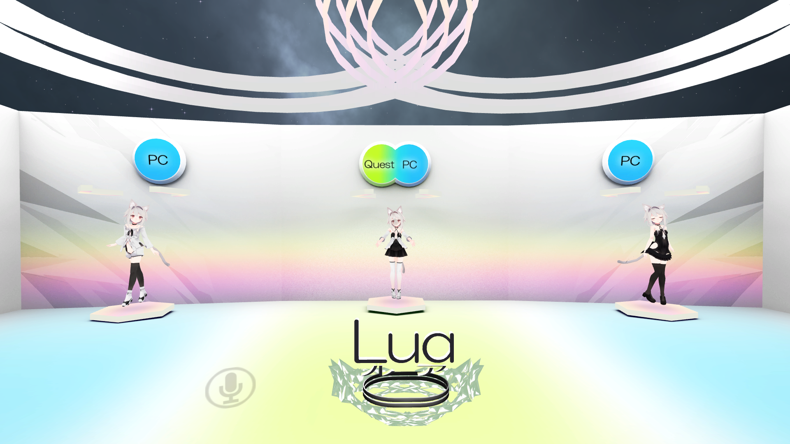
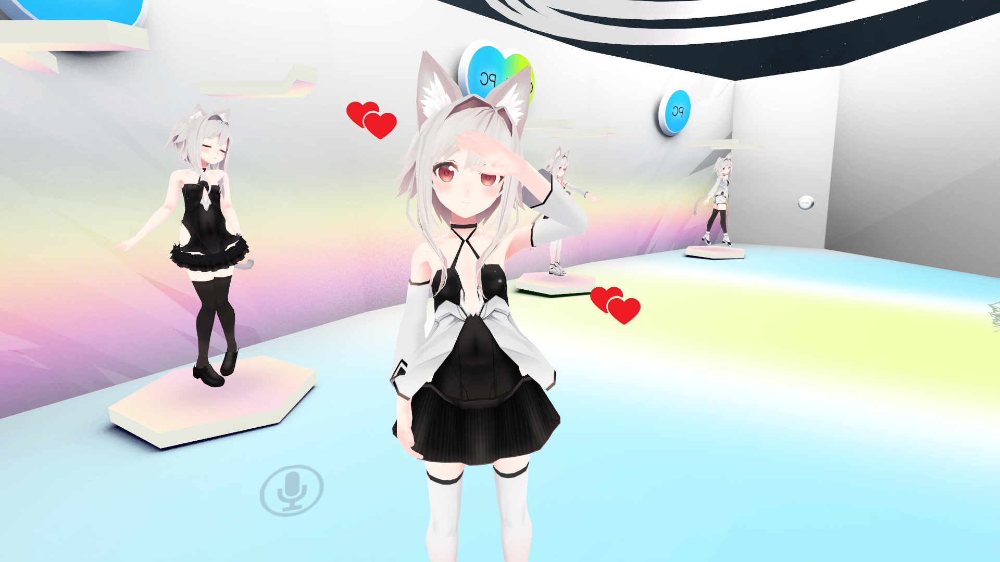
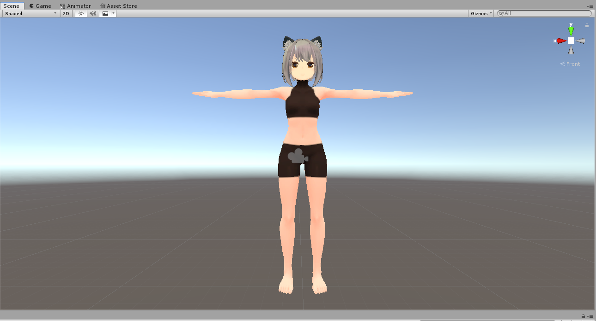
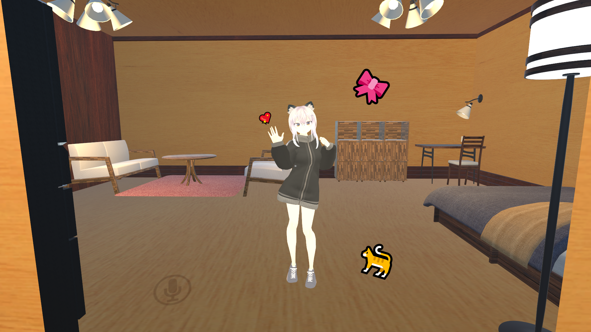
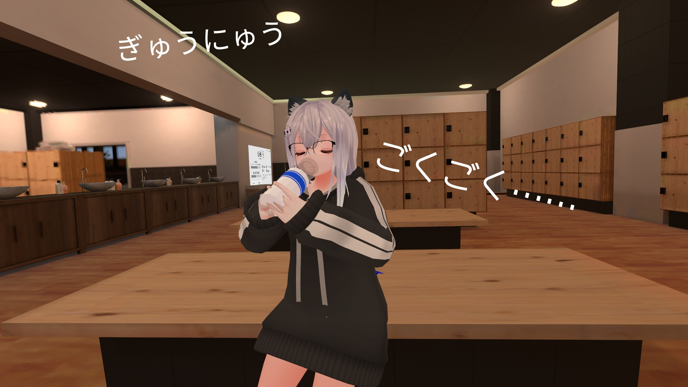
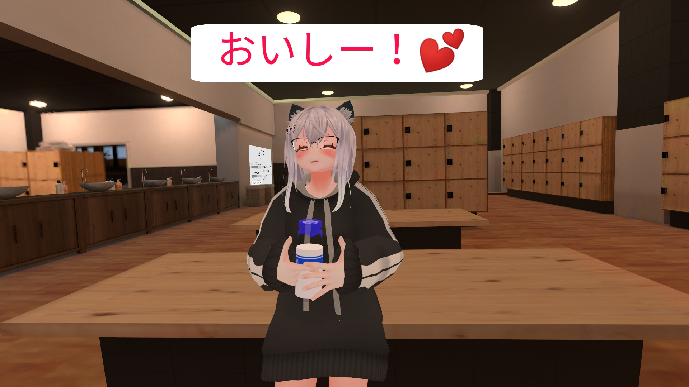
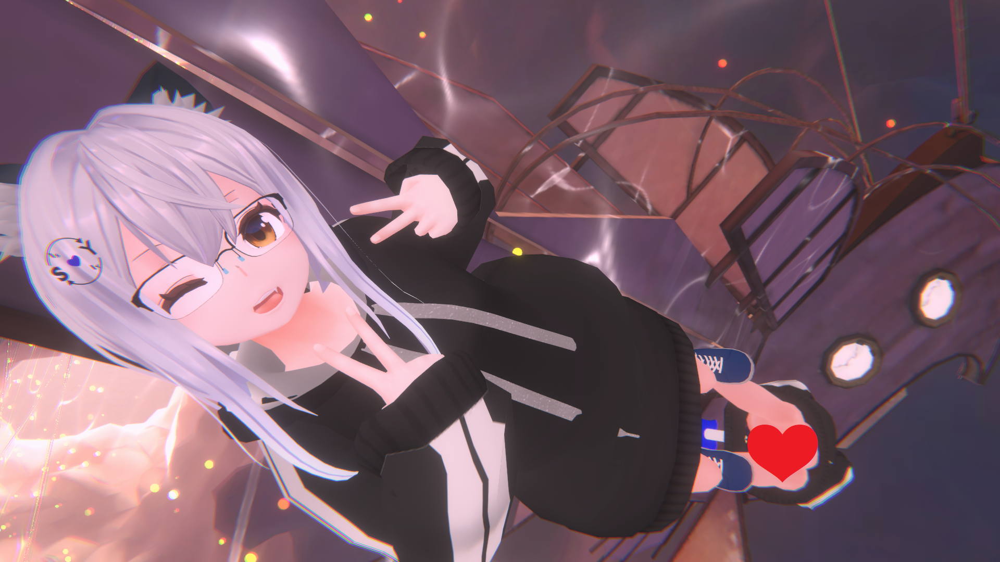

目次
初めに
本稿は「VRChat Advent Calendar 2020」にむけた記事です！🎉
今回の内容
初めましての人は初めまして。 あいやと申します！
VRChatはじめたての頃って、「アバターってなに？」って感じですよね。 あるいはNew Userになってアバターをアップロードできるようになっても、魅力がよくわからなかったり。
今回は「【Avatar3.0】初心者におすすめのアバター改変【段階別】」と称しまして、その魅力の一片を見ていただければと思います！✨
本稿の内容
- 「VRChatはじめてみました」からの、段階別おすすめアバター
- Visitor編
- New User編
- 「その後」編
- あるいは単に、筆者の過去・現在の使用アバターの紹介
具体的な技術詳細は省かせていただきますので、読み物寄りの内容となっております。
ちなみに、今の私のアバターはこのような感じです👇
こんにちは
— あいや@VRChat＆ボイトレ (@aiya000_vrchat) December 6, 2020
「あいや」と申します！
「かわいい」が大好きで、女の子になるのを目指してます🐕️🎀
「あいちゃん」って呼ばれてます✨
呼ばれたいです……
甘えさせてくれる方、募集中です💕(,,>᎑<,,)
よろしくおねがいします✨#VRChat#VRChat始めました pic.twitter.com/fPAHR67TtO
まとめ
本稿は読み物寄りの内容ですので、蛇足が多くなります。 識者の方々に蛇足は必要ないと思いますので、本稿の趣旨の結論から先に書きます。
- Lua Avatar WorldからLuaちゃんをもらってくる
- とにかくアバターワールドをたのしもう！
- NecoMaid-RICHちゃんを買う
- 初めてのアバターに最適！
- Mesh Deleter With Textureとキッシュちゃん素体を使ってジャージを着る
- オリジナリティの獲得
- Avatar3.0を使う
- A3Box + RadialInventory
- A3BoxのObjectSwitchの代わりにRadialInventoryを使うことで、作業が楽＆排他的切り替えが楽
Visitor編 - アバターワールド
さて「VRChatはじめてみました」の段階。 Visitorは誰もがVRChatの魅力に惚れひれ伏すか、あるいは戸惑うものかと思います。
私的には「最初期ってとにかく楽しめる段階だから、ぼっちでもいいから、とにかくワールド巡ったりしてくれ～～！」って感じですが、本稿の本題から外れますので、ここは引き下がります……。
ぜひVisitorさんは「アバターワールド」と呼ばれるワールドを巡ってみて、おすすめのアバターを見つけてみてください✨
ここで私はLua Avatar Worldで、Luaちゃんと出会いました！

Luaちゃんの様子

Visitorさんはぜひ、アバターワールドを探してみてね✨
New User編 - NecoMaid RICH
さてあなたはようやっとVisitorを抜け出し、VRChatに歓迎されました🎉
New User。 そう、ついにアバターとワールドがアップロードできるようになったのです。
でもやっぱり……アバターって有料だし、最初は気が引けちゃいますよね。
そこで私のおすすめは、NecoMaid RICHちゃんです！
※市販アバターの探し方について 👉 1
なんと2020-12-13現在、800円！？
まだあんまりピントこないかもしれませんが、テンションとしてはこんな感じです👇
やばい人「VRChatアバターが5000円とかで高すぎる」
— あいや@VRChat＆ボイトレ (@aiya000_vrchat) November 30, 2020
↑？？？
普通の人「5000円とかはやすい」
↑わかる
Necomaid-RICH「800円です」
↑？？？？？https://t.co/SoabqWnVbV
異常な値段っていうか、もう救済ですね……。
アバターにお金を出すのがまだ億劫な人には、最高の値段。 今だからこそ「値段でアバターを決めるのはもったいない」と思いますが、当時の価値観にとって、うってつけの選択肢でした。
ちなみに「DynamicBoneは絶対に買った方がいい」と誰もかれもに言われたので、ここでDynamicBoneはがんばって買いました。 （今ではやはりこれも、安い買い物だったと思います。）
アバター改変
さてアバターをアップロードできて、市販のアバターを導入してみたところで、アバター改変をするのはいかがでしょうか。
例えば↑で上げた私のRICHちゃんも、天使の羽と輪をつける、ちょっとした改変をしてあります✨
……とはいえ、それだけだとオリジナリティがなくて、その、体が…… 意識2に適合しませんよね！
それならば、よし、服です～～！ 自分で選んだ可愛い服を、自分に着せてあげるんです！
楽しくBoothウィンドウショッピングをして、服を探しましょう。 すごい楽しいんです。Boothウィンドウショッピング！
キッシュちゃん素体
……と、その前に。
体に服を着せるには、基本的に素体と呼ばれるものが必要です。 素体とはおおまかに「裸や下着姿のアバター」のことですです。
実はNecoMaid RICHちゃんやNecoMaidちゃんたち3は、「素体が今は売ってないので、専用服4がまったくない」という欠点を持ちます。 5
服を着せるには、素体が必要になります。 ですので、どうにかしなきゃいけません。
「服を着るには、体がなければいけません。」 6
ここで私は「RICHちゃんから頭をとってきて、キッシュちゃん素体につける」という方法を選びました。
ここらでだんだん、お金という重力が重くなってきますが、大丈夫ですよね。 大丈夫ですか？
ともあれ体が手に入ったので、服を着れます。

服を選ぶよー！！
できました
というわけで、できましたーー！✨
私が選んだのは、このジャージです。

ジャージ。 「可愛い服って言ったじゃないですか！！」って感じですか？
私もまだこのときは、素直にkawaiiを自分で体現できなかったのです……。 最初ははずかしいよね //
ていうか、このジャージ可愛いし！
やはり技術的詳細は他で紹介され尽くしているため省略しますが、ここでは以下のようなことを行いました。
- Mesh Deleter With Textureで体を削り取る
- ジャージを着せる
- 髪をまとまるロングに変える
おめでとうございます。 この行程を超えたあなたは、きっとあなたの内なるkawaiiに、バーチャルボディが追いついたことでしょう。
歓迎いたします。ようこそ、ブシドーへ。 7
Avatar 3.0
最後にAvatar3.0対応をします。 わーい！ 8
技術的なことは、先日ろーてくちゃんが記事を書いてくれましたので、そちらをご参照ください✨
Avatar3.0では、Playable Layersというものが導入されました。
Playable LayersではExpressions Menuという特別なメニューに、様々なロジックを組むことができます。 しかしながらこれはそこそこ手間がかかるので、既存の用意された環境を使います。
Radial Inventory Systemはアバターに「オブジェクトを出し入れする機能」を追加します。 例えば武器やバリアー・耳かきやハムスターなど。 なんと服を着替えたりもできます！
あいやのお着換えです💖✨✨
— あいや@VRChat＆ボイトレ (@aiya000_vrchat) December 13, 2020
案外うまくできてるでしょ！ pic.twitter.com/QE3p7mvWjE
A3BoxにもObjectSwitchという機能がありますが、Radial Inventory Systemは排他的な切り替えが楽にできたので、そちらを使うことにしました。9
A3BoxはObjectSwitch以外にもいくつかの機能を持ちます。 それぞれ以下のようなものです。
- ハンドジェスチャー設定機能
- Avatar2.0ではハンドジェスチャーも自前で設定しなければいけません
- A3Boxのこれをそのまま使うだけで、Avatar2.0と同じようにハンドジェスチャーによる表情切り替えなどが行えます
- EmoteBox
- Avatar2.0でのEmoteと同じ機能
- Avatar3.0でExpressions Menuを用意するときは、Emote機能を自前で用意する必要があります
- A3Boxでは32個のEmoteが同梱されています
- 最強🙏❤️
- Avatar2.0でのEmoteと同じ機能
- FaceBox
- 表情をメニューで選択し、切り替えを行う機能
- 「笑顔とピースサインで写真を撮りたいけど、ピースサインはハンドジェスチャーで怒り顔に設定している」というときに便利です10
終わり
あなたのkawaiiは見つかりましたか？ あるいはkakkoiiかもしれませんし、もっと他のものかもしれません。
そう、芽生え始めたor芽生えるかもしれない、あなたのバーチャルに対する意識のことです。 あえてバーチャル自我とでも言い直しましょうか♥️
あなたのバーチャル自我としあわせ・平穏が、ありますよう祈っております✨



おわり。
アバターはBoothで探すのが、私の一番のおすすめです！ あるいはvketさんもいいと思います。👉 「Booth VRChat アバター」 「VirtualMarket アバター」↩︎
もしかしたらもう「もっと可愛い女の子になりたい！」という意識…… 内なるkawaiiが目覚めているかもしれません。 その意識に合わせて、改変をしてあげましょう✨↩︎
NecoMaidには、無印・RICH・Premiumの3人がいます。 私の脳内設定では――無印ちゃんはRICHちゃんの若干幼いころで、PremiumちゃんはRICHちゃんの姉。↩︎
専用服というのは「このモデル向けに作ったので、このモデルに着せる分には簡単な設定だけで着れるよ」というものです。 非専用服は後述のMesh Deleter With Textureを使うなどの方法で着せる必要があります。 Blenderで解決できることもありますが、……☝️↩︎
これは後述のMesh Deleter With Textureで解決します。 あるいはBlenderで解決していいかもしれませんが、私は小物を作るくらいしか、Blenderを使えない！😭↩︎
これ、格言になりませんか？↩︎
kawaiiは武士道 ― ブシドー ― 。↩︎
NecoMaid RICHちゃんはAvatar2.0対応なので、自前でAvatar3.0に移行する必要がありました。 Avatar3.0使いたい！ Avatar3.0を使うと、後述のExpressions Menuというもので、たのしいことがいっぱいできます！↩︎
例えば服を着替えるときには、「カジュアルなパーカーと鎧を同時に着る」ということはないですよね。 そういうときに「排他的な切り替え」は便利です。 現実では「鎧の下にパーカーを着る」というシチュはありえるかもしれませんが、鎧を着たらパーカーが見えなくなるので、バーチャルでは意味がない！↩︎
ピースサインで怒り顔の人以外……つまり表情とハンドジェスチャーを独立させたい人の全員に便利です↩︎
この記事はこちらから修正リクエストを送ることができます。
【Avatar3.0】初心者におすすめのアバター改変【段階別】 - github
ゴミ箱ボタンの左にある、鉛筆ボタンを押してね！